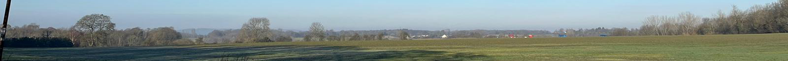

Protect Ware Park
Home
Help Out
Contact
Useful Links
Useful Information
Ware Solar Farm Information
Request for screening opinion for proposed solar park
Screening Opinion Request November 2022
Decision Notice
Neighbour Correspondence
Mineral and Waste
Email from Applicant 24/11/22
Site Location Plan
Farm Energy: Glaxo Smith Kline
Hertford News: Solar Farm Proposed North of Hertford
Countryside Charity
Country Side Charity Home Page
CPRE Hertfordshire Policy Statement on Solar Energy Installations In The Countryside
Solar Farm Proposals In The Wider Area
Wildlife Information
Herts Wildlife Trust
Impact of Solar Energy on Wildlife Is an Emerging Environmental Issue